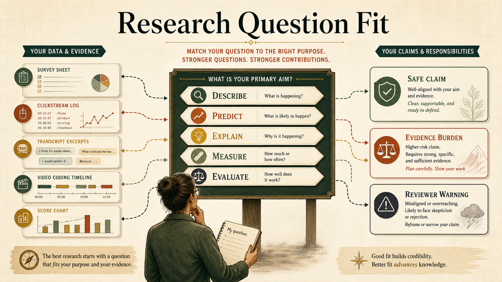
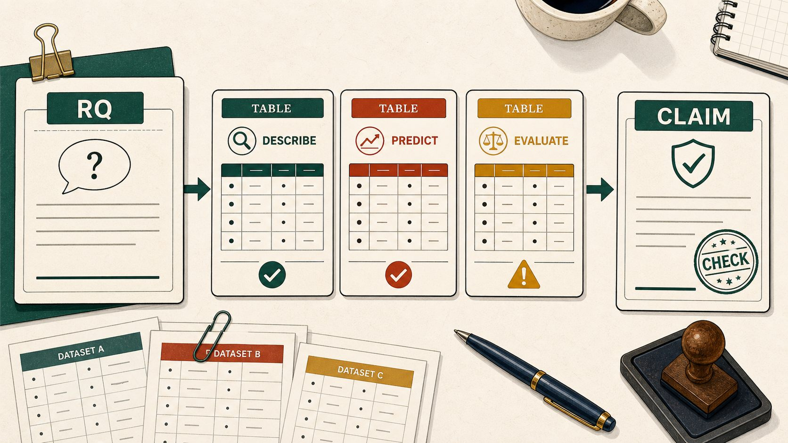
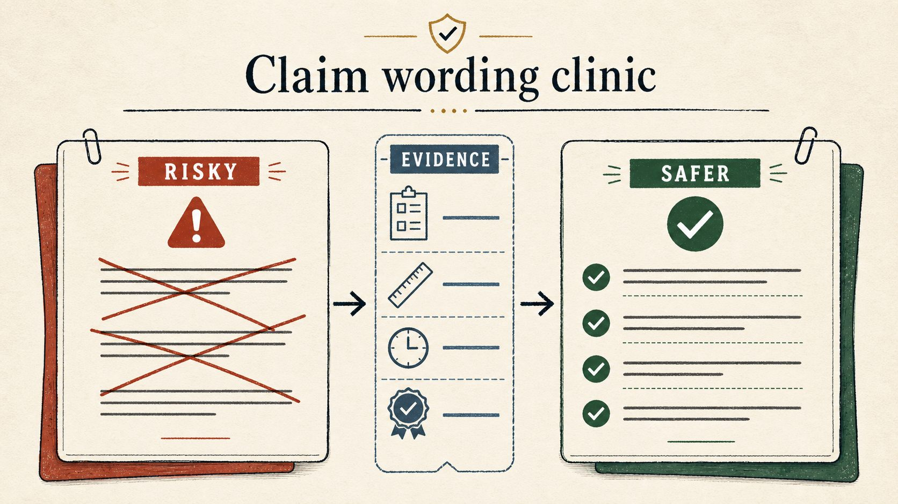

Research Question Fit: what your data can and cannot answer
A visual decision guide for one question: what claim can this dataset honestly support? Use it before choosing a statistical test, building a dashboard, or asking an AI agent to analyze a dataset.

This is a narrow guide, not a general methods course
This guide is about one early research decision: before choosing a method, decide what kind of question your data can legitimately answer.
You have data files, a draft research question, and pressure to start analysis before the claim boundary is clear.
A license to make causal, construct, or population claims after selecting a method that sounds advanced.
Start from evidence, not the method you want to run
Use the path below as the whole guide in one picture.
Constraint should become better questioning, not silence
The guide is strongest when it holds two ideas together: evidence limits claims, but those limits help researchers ask sharper questions.
Data shape, design, and validity evidence set the boundary for what a study can claim.
If the page only says "you cannot claim that," beginners may stop generating useful questions.
RQ fit is a revision tool: transform an overclaim into a defensible question, then name what evidence would support a stronger claim.
Did the AI tutor improve learning?
How did learners' scores, actions, and perceptions change during this implementation?
What is the tutor's effect on learning compared with a matched or randomized alternative?
Claim strength ladder
Many weak RQs can be repaired by moving one rung down the ladder. The repair should be explicit, not hidden in vague wording.
What happened in this dataset? Requires clear units, inclusion rules, and visible missingness.
What patterns co-occur or predict later outcomes? Requires timing, leakage checks, and validation.
What construct or mechanism is plausible? Requires validity evidence, context, coding transparency, and rival explanations.
What effect or population claim is warranted? Requires identification, representative sampling, external validation, or replication.
Choose the question verb and data type
This is the page's main onboarding tool. It does not approve a study; it shows the first claim boundary to inspect.
Describe + Survey
BoundedSee how question verbs connect to evidence, claims, methods, and reviewer objections
This map turns the guide into a navigable network. Click a research-question verb to highlight the evidence path it activates. The point is not that one method belongs to one verb forever; the point is that every verb creates a different warrant.
See the fit decision in context
Each example starts with an ambitious question, then narrows it into a claim the dataset can actually support.
Perception ratings can describe attitudes and compare groups, but they do not prove behavior change.
Clickstreams can show pathways and prediction signals, but they need validity evidence before becoming engagement measures.
Pre/post scores can show change over time; causal wording needs comparison or identification support.
Example 1: Student survey after an AI learning activity
| Step | Decision |
|---|---|
| Available data | Post-activity Likert survey, self-reported confidence, open comments, no comparison group. |
| Risky RQ | Did the AI activity improve students' learning? |
| Why risky | The dataset has perceptions after the activity, not a causal design or independent learning outcome. |
| Better RQ | How did students perceive the usefulness, difficulty, and confidence effects of the AI activity? |
| Safe claim | Students reported favorable perceptions and confidence after the activity; learning effects require additional outcome/design evidence. |
| Method family | Descriptive statistics, scale reliability, item-level visualization, thematic summary of comments. |
| Upgrade path | Add a pre-measure, independent performance outcome, comparison activity, and follow-up interview to move toward change or mechanism claims. |
Example 2: Learning platform clickstream logs
| Step | Decision |
|---|---|
| Available data | Timestamped events, task IDs, hint requests, attempts, final score, no interview or validated engagement scale. |
| Risky RQ | Which engagement patterns caused better learning? |
| Why risky | Logs can support sequence, prediction, and association; they do not directly measure engagement or causality. |
| Better RQ | What action pathways are associated with final task performance? |
| Safe claim | Certain recorded pathways were associated with higher final scores; interpretation as engagement requires construct evidence. |
| Method family | Sequence mining, transition network analysis, process mining, predictive validation. |
| Upgrade path | Add construct validation through observation, self-report, or external criteria before naming the pattern as engagement or SRL. |
Example 3: Classroom intervention with pre/post scores
| Step | Decision |
|---|---|
| Available data | One class, intervention lesson, pre/post concept score, no comparison class, no random assignment. |
| Risky RQ | Did the intervention cause learning gains? |
| Why risky | One-group pre/post change cannot rule out maturation, testing, selection, or classroom events. |
| Better RQ | How did scores change from pre to post during the intervention implementation? |
| Safe claim | Scores increased from pre to post in this implementation; causal attribution remains tentative. |
| Method family | Paired descriptive analysis, effect-size estimation with uncertainty, implementation notes, future QED/RCT planning. |
| Upgrade path | Add a comparison class, random assignment, matched historical cohort, regression discontinuity, or interrupted time-series design before using causal language. |
Pick the table that matches the research question
The "right table" is the analysis-ready view your question needs. If the dataset cannot be reshaped into that view without inventing missing columns, the research question is too strong for the current evidence.

| RQ verb | Build this table/view | Minimum columns or evidence | Defensible output | Reviewer challenge |
|---|---|---|---|---|
| Describe | One row per person, task, artifact, event, or session being summarized. | Stable unit ID, clear inclusion/exclusion rules, missingness, timestamps or context when relevant. | Frequency, distribution, pattern, or descriptive profile in this dataset. | Are the records complete enough for the pattern being reported? |
| Compare | One row per comparable unit with group labels and the same outcome definition. | Group membership, outcome, measurement timing, baseline/context variables, sampling notes. | Observed group difference, not an intervention effect. | Are the groups meaningfully comparable, and what does the label actually represent? |
| Associate | One row per unit with X, Y, timing, and planned covariates. | Measured predictor/outcome, temporal ordering if implied, missingness, non-overlapping measures, adjustment logic. | Association or model-adjusted relation. | Could timing, confounding, or measurement overlap explain the relation? |
| Predict | Prediction table with features available before the target outcome. | Outcome timing, train/test or external split, leakage check, feature provenance, metrics chosen before inspection. | Predictive performance under validation. | Was future or outcome information accidentally leaked into predictors? |
| Sequence | Event table: one row per action, turn, move, code, or timestamped state. | Actor/session ID, event label, order, timestamp or turn number, event-definition logic. | Pathway, transition, process pattern, or trajectory. | Did the analysis preserve order, or flatten the process into independent rows? |
| Explain | Case/evidence table linking excerpts, observations, artifacts, and analytic memos. | Sampling logic, context, transcript/artifact source, coding trail, rival interpretations, memo evidence. | Interpretation, account, or plausible mechanism. | What evidence supports this interpretation over alternatives? |
| Measure | Indicator table connecting constructs to items, scores, traces, codes, or detectors. | Construct definition, indicator rationale, reliability, validity evidence, population/context fit. | Bounded proxy or score interpretation. | Why should this indicator represent the construct here? |
| Evaluate | Design table linking units, treatment/comparison, timing, outcome, and identification feature. | Assignment or comparison logic, baseline equivalence, attrition, contamination checks, outcome timing. | Effect estimate when design assumptions are met; otherwise implementation-associated change. | What design feature rules out plausible alternative explanations? |
| Generalize | Transport table comparing source sample/context to target population/context. | Sampling frame, platform/task context, subgroup coverage, external validation, replication, or population evidence. | Bounded generalization. | What population, platform, task, and time period does this evidence actually represent? |
| Integrate | Joint-display table where each row connects quantitative result, qualitative evidence, and inference. | Mixed-methods design, integration point, role of each data source, convergence/divergence logic. | Integrated interpretation across evidence types. | Where exactly do the evidence sources inform or challenge each other? |
Data-source traps to keep while choosing the table
Attitudes are not behavior; convenience responses are not population prevalence.
Raw clicks are not cognition. Event definitions, omitted actions, and platform affordances shape the evidence.
Themes interpret meaning; they do not become population rates unless sampling supports prevalence.
Coder agreement, event boundaries, camera blind spots, and observation windows carry the claim.
Scale meaning, timing, reliability, and alignment with the outcome claim must be explicit.
Accuracy is not construct validity, explanation, or causal evidence.
Rewrite claims until the design can carry them
Five common overclaims, rewritten into safer language.

Needs causal design and outcome evidence.
Clicks are only behavioral traces and may not represent engagement.
Prediction does not equal explanation.
Trace patterns alone rarely prove construct change.
Qualitative evidence usually interprets or contextualizes.
When the current data are too weak, specify what would make the stronger question possible
A good fit audit should not stop at "unsupported." It should name the nearest defensible question and the concrete evidence needed to support the stronger one.
Add pre/post timing, a meaningful outcome, missingness checks, and language that separates observed change from causal improvement.
Add randomization, a credible quasi-experimental feature, regression discontinuity, interrupted time series, SCED logic, or a carefully justified identification strategy.
Add construct definitions, indicator rationale, reliability/coder evidence, external criteria, and interpretation limits.
Add sampling-frame evidence, subgroup coverage, external validation, replication, or a clear bounded-population statement.
Preserve ordered event rows, timestamps or turns, event definitions, session IDs, and the task state that made each action meaningful.
Add qualitative/contextual evidence, analytic memos, rival interpretations, and transparent links between excerpts and claims.
A sophisticated method cannot rescue a mismatched claim
Method choice matters after the claim type is aligned. The table below catches a common failure: selecting an impressive method and then letting the method's vocabulary inflate the claim.
| Tempting move | Why it fails | Safer decision |
|---|---|---|
| Run machine learning, then call top predictors "causes." | Prediction features can be proxies, leakage, or context artifacts rather than mechanisms. | Report predictive performance and treat explanations as hypotheses unless supported by theory/design. |
| Use sequence mining, then claim learning progression. | Order is preserved, but construct interpretation still depends on event meaning and outcome evidence. | Call them pathways, transitions, or process patterns until construct validity is established. |
| Use a pre/post test, then claim intervention effect. | Change over time does not rule out alternative explanations. | Report implementation-associated change unless a causal design feature is present. |
| Use factor analysis, then treat factors as validated constructs. | Statistical structure is not enough for construct interpretation. | Combine dimensional evidence with theory, item content, reliability, and external validity checks. |
| Use interviews to "prove" the quantitative result. | Qualitative data usually contextualize, explain, complicate, or challenge patterns rather than certify them. | State the integration logic: convergence, expansion, explanation, contradiction, or case illustration. |
Prompt an AI assistant to audit fit before analysis
Use this before asking an agent to run statistics or build a dashboard.
Build this kind of guide through conversation
Use Claude Code or Codex as a research-design collaborator, not just a page generator. The workflow is: define the claim problem, force evidence boundaries, then ask the agent to turn that structure into a public guide.
Tell the agent the audience, topic, language, repo path, and that the first screen should be the usable guide, not a landing page.
Ask for a table that maps RQ verbs to required data views, minimum columns, safe claims, and reviewer objections.
Push the agent to check the argument dialectically: thesis, overclaim risk, synthesis, missing evidence, and citation anchors.
"Do not just make it pretty. Identify where the content is redundant, where it is under-specified, and which table a reader should build for each research question."
"Find the two places where an image would reduce text pressure. Generate project-bound assets and insert them only where they teach the decision."
"Stage only this guide, verify local assets and anchors, then push to GitHub Pages. Do not stage unrelated dirty worktree files."
Copy-ready build prompt
Starter files for teams and agents
Common confusion points
Is this a guide to choosing statistical tests?
No. It comes before that. It helps decide what claim type is defensible, then points toward method families.
Can observational data ever support causal claims?
Sometimes, but only with a credible identification strategy and transparent assumptions. Simple convenience comparisons, correlations, or one-group pre/post changes are not enough.
Are qualitative questions weaker?
No. They answer different kinds of questions and need different warrants: sampling logic, context, analytic memoing, coding transparency, and interpretive grounding.
Why separate prediction from explanation?
A model can predict well using patterns that are not explanatory mechanisms. Explanation needs theory, measurement, design, and often additional evidence.
Why are trace data risky?
Trace data are produced by platforms, tasks, event definitions, and theory-laden logging choices. They can be powerful, but they are not direct windows into cognition.
What should I do when my favorite RQ is unsupported?
Use the ladder: write the question you wanted, rewrite what the current data can support, then specify the design or measurement evidence needed for the stronger version.
How much explanation belongs in the paper?
Enough for a reviewer to see the chain from data shape to claim wording: unit of analysis, timing, design support, measurement limits, analysis choice, and the claims intentionally avoided.
Can an AI assistant decide fit for me?
No. It can surface mismatches and draft safer wording, but the researcher remains responsible for the design assumptions, construct interpretation, and reporting limits.
Where the guide's rules come from
This section keeps the guide honest: each practical rule points to a reporting, validity, or design tradition rather than personal preference.
AERA and APA JARS anchor the demand to state the problem, design, measures, analysis, assumptions, and limits. That is why this guide starts with evidence and claim wording before method choice.
WWC standards anchor the red warning on evaluation claims: causal language needs a design feature that addresses plausible alternatives, not just a pre/post contrast or convenient comparison.
Winne and Gasevic, Greiff, and Shaffer anchor the warning that logs, detectors, and dashboards need construct and consequential validity evidence before becoming learning or engagement claims.
Ocumpaugh et al. anchor the population-validity warning: models and patterns trained in one platform, sample, or course may not travel without external validation or replication.
Reimann et al. and Berland et al. anchor the sequence warning: if the research question is about pathways, transitions, or learning process, the analysis must preserve order and event meaning.
Moss anchors the distinction between consistent measurement and defensible interpretation. Reliable scores or codes can still support the wrong construct claim.
Foundational and checked sources
Show references
- American Educational Research Association. (2006). Standards for reporting on empirical social science research in AERA publications. Educational Researcher, 35(6), 33-40. https://doi.org/10.3102/0013189X035006033
- Appelbaum, M., Cooper, H., Kline, R. B., Mayo-Wilson, E., Nezu, A. M., & Rao, S. M. (2018). Journal article reporting standards for quantitative research in psychology. American Psychologist, 73(1), 3-25. https://doi.org/10.1037/amp0000191
- Levitt, H. M., Bamberg, M., Creswell, J. W., Frost, D. M., Josselson, R., & Suarez-Orozco, C. (2018). Journal article reporting standards for qualitative primary, qualitative meta-analytic, and mixed methods research. American Psychologist, 73(1), 26-46. https://doi.org/10.1037/amp0000151
- Moss, P. A. (1992). Shifting conceptions of validity in educational measurement: Implications for performance assessment. Review of Educational Research, 62(3), 229-258. https://doi.org/10.3102/00346543062003229
- Keselman, H. J., Huberty, C. J., Lix, L. M., Olejnik, S., Cribbie, R. A., Donahue, B., Kowalchuk, R. K., Lowman, L. L., Petoskey, M. D., Keselman, J. C., & Levin, J. R. (1998). Statistical practices of educational researchers: An analysis of their ANOVA, MANOVA, and ANCOVA analyses. Review of Educational Research, 68(3), 350-386. https://doi.org/10.3102/00346543068003350
- Winne, P. H. (2020). Construct and consequential validity for learning analytics based on trace data. Computers in Human Behavior, 112, 106457. https://doi.org/10.1016/j.chb.2020.106457
- Gasevic, D., Greiff, S., & Shaffer, D. W. (2022). Towards strengthening links between learning analytics and assessment. Computers in Human Behavior, 134, 107304. https://doi.org/10.1016/j.chb.2022.107304
- Ocumpaugh, J., Baker, R. S., Gowda, S. M., Heffernan, N. T., & Heffernan, C. L. (2014). Population validity for educational data mining models. British Journal of Educational Technology, 45(3), 487-501. https://doi.org/10.1111/bjet.12156
- Reimann, P., Markauskaite, L., & Bannert, M. (2014). e-Research and learning theory: What do sequence and process mining methods contribute? British Journal of Educational Technology, 45(3), 528-540. https://doi.org/10.1111/bjet.12146
- Berland, M., Martin, T., Benton, T., Smith, C. P., & Davis, D. (2013). Using learning analytics to understand the learning pathways of novice programmers. Journal of the Learning Sciences, 22(4), 564-599. https://doi.org/10.1080/10508406.2013.836655
- What Works Clearinghouse. (2022). Procedures and Standards Handbook, Version 5.0. https://ies.ed.gov/ncee/wwc/Handbooks
- OpenAlex. (2026). Works filter documentation. https://docs.openalex.org/api-entities/works/filter-works